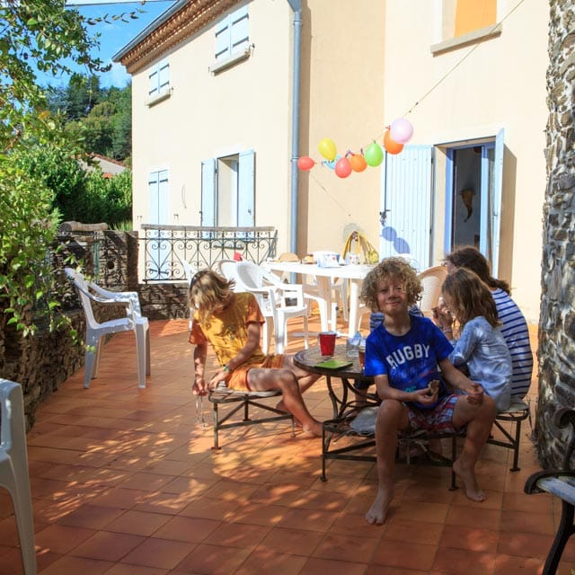
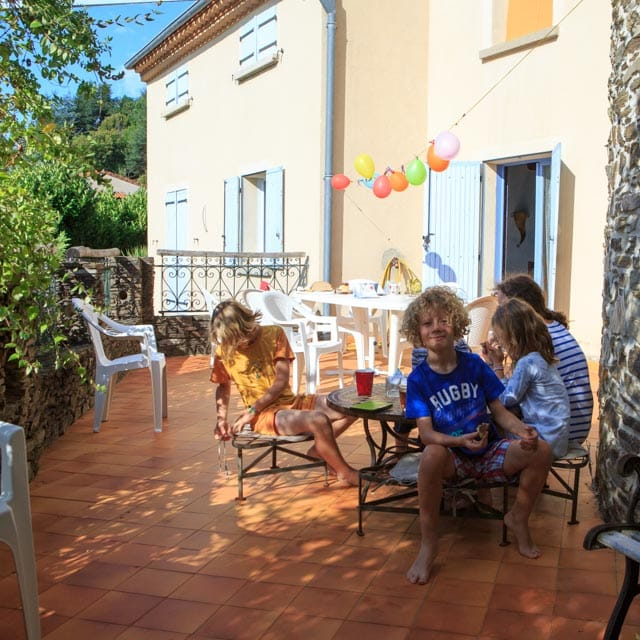
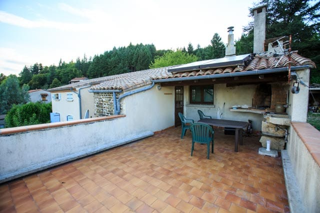
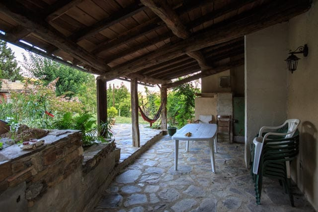
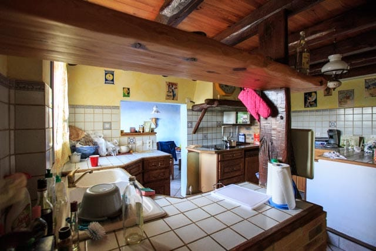

Situé a 1 km du centre, du Vigan, le gite bénéficie d'une position dominante avec une vue dégagée sur la ville et les montagnes aux alentours.
Cette situation exceptionnelle vous permet de passer vos vacances au calme et en même temps d etre pres des commerces et des activités du centre ville.
Le gite permet de loger jusque 12 personnes - il dispose de une grande cuisine, salon, billard, 2 salles de bain, 4 chambres et un grand jardin.
Il est aussi possible de louer uniquement le rez de chaussee, qui permet de loger 2 à 4 personnes.
Le gite dispose de multiples terrasses pour profiter au mieux du soleil et du jardin:
-
Exposée plein sud et beneficiant du soleil dès le matin, la terrasse principale s'ouvre entre la cuisine et le hall d'entree.
 

-
Véritable solarium exposé plein sud et bénéficiant d'une vue magnifique sur la vallée, cette terrasse de toit dispose d'un large barbecue protégé sous un porche.
- 
Cette terrasse est a l abri de la pluie et du soleil ce qui permet de manger dehors à tout moment en été. Equipée d'une petite cuisine d'extérieur et une belle vue sur le jardin, ce sera également l'endroit idéal pour votre sieste.
Le gite bénéficie d'une cuisine complètement équipée:

- Deux refrigérateurs avec congélateur
- lave vaiselle
- plaque de cuisson a induction
- four a chaleur tournante
- micro onde
- vue sur la terrasse